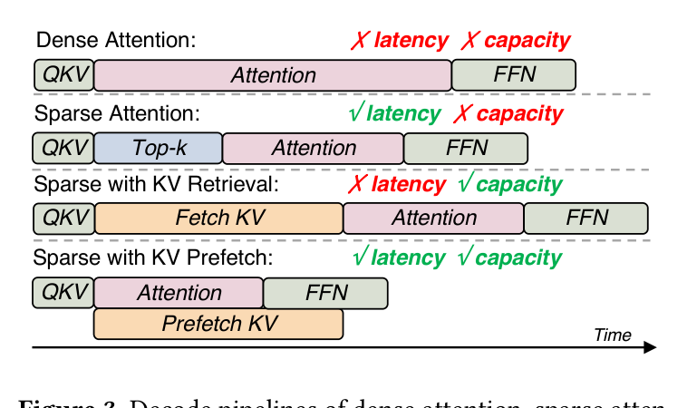
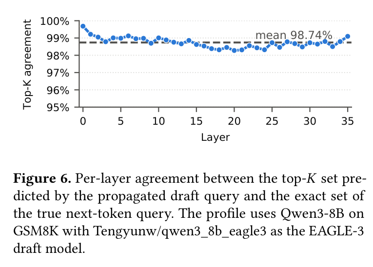
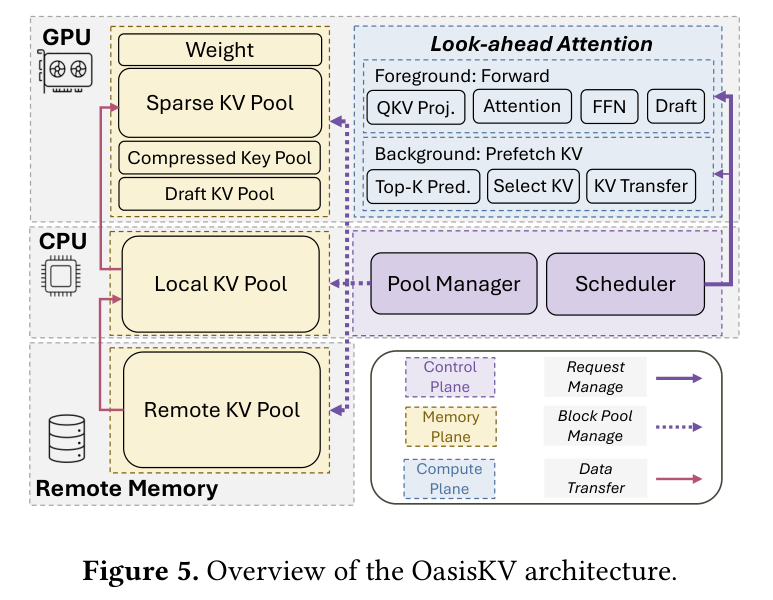
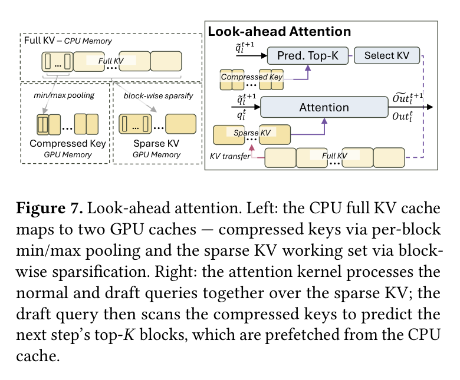
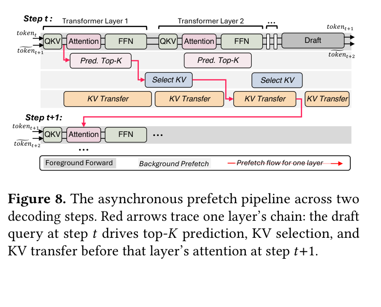
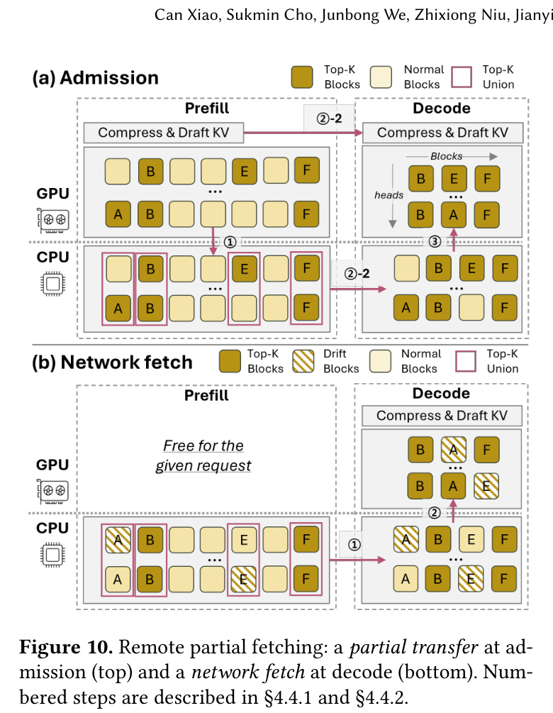
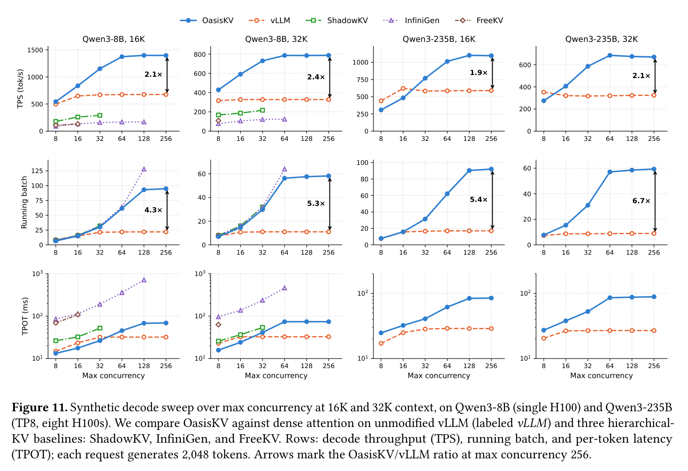
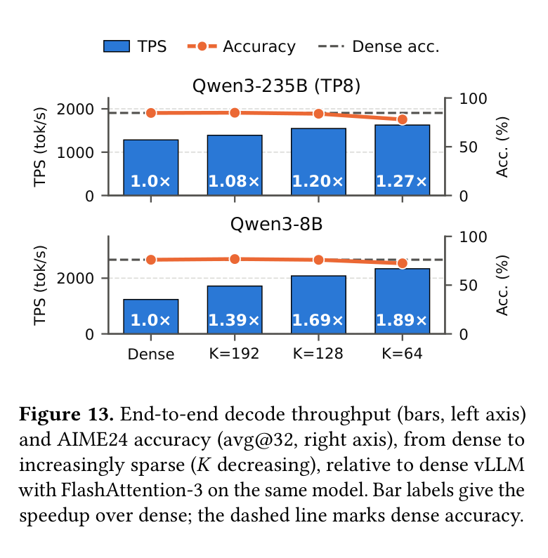

OasisKV：Scaling In-Decode KV Cache Beyond HBM with Lookahead Sparse Prefetching
原文：OasisKV.pdf
作者：Can Xiao、Sukmin Cho、Junbong We、Zhixiong Niu、Jianyi Cheng、Yiren Zhao、Youngjin Kwon、Yongqiang Xiong、Rui Ma、Junyi Liu。
时间与状态：arXiv:2608.08097，2026-08-08。
研究层次：decode 阶段的稀疏 KV 读取，以及 CPU/远程内存扩展。
Motivation
OasisKV 关注的不是下一步由哪个 Agent 执行，而是一个正在 decode 的请求在生成当前 token 时，究竟需要读取历史中的哪些 KV。随着上下文和并发增长，完整 KV cache 同时受到容量和带宽两道约束。其大小近似为：
MKV(B, L) = B ⋅ L ⋅ Nlayer ⋅ 2 ⋅ Nkv ⋅ dh ⋅ s,
因此，HBM 中可容纳的 batch 上限为：
$$B_{max}=\left\lfloor\frac{M_{HBM}}{L\cdot N_{layer}\cdot2\cdot N_{kv}\cdot d_h\cdot s}\right\rfloor.$$
以 GQA 模型为例，32B 模型的每个 token KV 约为 256 KiB；32.7K 上下文的单个请求可能占用 8.6 GB。80 GB HBM 扣除权重和运行时空间后，只能容纳约 9 个这样的请求。把完整 KV 放到 CPU 或远程内存能缓解容量压力，却会把问题转化为每个 decode step 的数据搬运压力。

图 3：dense attention、稀疏 attention、KV retrieval 和 KV prefetch 的路径对比；OasisKV 试图把“只读取必要 KV”做成可流水化的 serving 机制。
每个 decode step 可用于传输的预算约为 Ctoken = BlinkTdecode。在 Qwen3-8B、H100、2K active context 的测量中，decode step 约 17 ms；PCIe 64 GB/s 在这一窗口内仅能为每个请求搬运约 118 个新 KV token。若每步都搬回完整历史，传输会直接进入关键路径，decode 无法持续推进。Prefill-Decode disaggregation 还会在请求准入时传输整份 KV，造成 admission burst 和 decode 节点主机内存占用。
因此，OasisKV 要同时解决三件事：以低开销预测下一步 attention 的 top-K block；将预测、选择和传输隐藏在前台前向计算背后；在 PD 场景中只传输当前真正需要的 KV 子集。
Key Insight
相邻 decode step 的 query 往往关注相近的历史位置。论文发现，上一 token 与下一 token 的 top-20 平均有 83.9% 重合；利用 draft token 传播 look-ahead query 后，预测 top-K 与精确下一 token query 在每层的一致率都超过 98.2%，平均为 98.74%。这使系统无需额外运行一次完整目标模型，也能提前估计下一步需要从 CPU 或远程层取回哪些 block。

图 6：传播 draft query 后，各 Transformer layer 的 top-K 预测与真实下一 token query 的平均一致率为 98.74%。
这里的预测并不是认为其余 KV 永远无用，而是将完整 KV 作为容量层，GPU 中只保留当前 attention 的稀疏 working set。只要该 working set 能在下一个 attention 前到位，前台 decode 就不必等待完整历史的传输。
Core Design
完整 KV 放在容量层，HBM 保存工作集
OasisKV 的前景路径正常生成 token；后台路径根据 look-ahead signal 预测下一步的 top-K、选择需要的 block 并异步搬入。完整 KV 保存在 CPU 或远程层，HBM 只保留被选中的历史 block 和 local window。

图 5：OasisKV 的 GPU、CPU 和 Remote Memory 三层 KV pool，以及 look-ahead attention、pool manager 和 scheduler。
1. Look-ahead Attention：低成本预测候选 block
为避免扫描完整 key，OasisKV 为每个 KV block 保存 key 的逐维 min/max summary，而不是保存全部 key。预测 query 只需扫描这些摘要即可筛出候选 top-K，随后再按 block 获取 full KV。这样将“在完整历史里找可能相关位置”的开销，压缩为对少量元数据的扫描。

图 7：左侧是 CPU full KV 到 compressed-key pool 和 sparse KV pool 的映射；右侧把 normal query 与 draft query 放在同一个 attention kernel 中处理。
2. Fully Asynchronous Pipeline：用异步流水线隐藏取数延迟
每层都有独立的 prediction、selection 和 KV transfer worker。第 t 步执行前向计算时，后台已在准备第 t + 1 步的 top-K；只要搬运能在下一次该层 attention 前完成，就不会阻塞前景路径。论文将这一约束写为：
Tpipe = max (Tpred, Tselect, Ttransfer) ≤ Δprefetch,
其中 Δprefetch 是同一层连续两次处理之间的可用时间窗口。这个条件也解释了为什么系统不仅需要预测准确，还必须严格控制预测、选择和传输本身的开销。

图 8：跨两个 decode step 的异步流水线；红色链路展示 draft query、top-K prediction、KV selection 和 transfer 的依赖关系。
3. Fetch Cap 与 Head-wise Mapping：给搬运量设置上限
每个 head 在每步最多 fetch rK 个新 block，其他需求由已经驻留的 block 覆盖。实验表明，当 fetch ratio 超过 0.10，链路在约 30–34 GB/s 附近饱和，继续搬运反而会拖慢 decode。OasisKV 还在 vLLM page table 之上增加 head-wise logical-to-logical mapping，使不同 KV head 维持各自的稀疏集合，同时尽量保留既有 FlashAttention 执行路径。
4. Remote Partial Fetching：在 PD 中按需远程取回
Prefill 节点额外执行一个 decode step，获得首步 query 与各 head top-K 的并集。请求准入时，系统只传输首步 working set、compressed-key cache 和 draft state；后续若 top-K 漂移导致 miss，再从 prefill 节点的 host pool 远程读取，先到 decode 节点 DRAM，再 gather 到 HBM。每个 block 最多跨网络一次，resident set 单调增长，避免在 admission 阶段复制整份 KV。

图 10：远程部分读取分为 admission partial transfer 和 decode-time network fetch，避免在请求开始时搬运完整 KV。
Evaluation
以小幅 attention 近似换取更大的并发空间
实验使用 8 张 H100 80 GB、2 个 Xeon Platinum 8480C、2 TB 主机内存；GPU 经 NVLink/NVSwitch 互连，单卡经 PCIe Gen5 x16 连接 CPU。PD 实验使用两节点 ConnectX-7 400-Gbps RoCE。模型包括 Qwen3-8B、Qwen3-235B-A22B MoE、Llama-3.1-8B，使用 EAGLE-3 draft heads。准确率任务包括 AIME24/25、GPQA-Diamond、LongBench v2；性能 workload 为 16K/32K context、每请求生成 2,048 token，默认 block size 为 16、top-K 为 128 blocks。

图 11：在不同最大并发下比较 decode throughput、running batch 和 TPOT；OasisKV 在 KV 填满 HBM 后仍能扩大 batch。
在单张 H100、Qwen3-8B、16K context、并发 128 时，OasisKV 达到 1,398 tok/s，dense vLLM 为 676 tok/s，约为 2.1 倍；并发 16 时，TPOT 为 17.7 ms，对比 dense 的 23.5 ms，吞吐为 836 对 649 tok/s。Qwen3-235B 在高并发 16K workload 上最高约有 1.9 倍吞吐；低并发时模型计算占主导，稀疏管理开销可能使 TPOT 略高，说明它主要解决的是 KV 压力而非所有场景的固定加速。
在 PD 实验的 24K/32K context 下，dense 吞吐约为 550/384 tok/s，OasisKV 达 1,204/888 tok/s，即 2.1–2.3 倍。Remote Partial Fetching 将 decode 节点每请求 host KV 从 3.38/4.52 GiB 降到 1.54/1.73 GiB；admission 传输从 3.37/4.50 GiB 降到 0.52/0.46 GiB，减少 6.5–9.7 倍。即使将 decode 期间的漂移 miss 纳入统计，端到端总传输仍下降约 1.33–1.50 倍。

图 13：减小 top-K 会提高 decode throughput，但过小的 working set 会带来准确率损失；K=128 是较稳妥折中。
准确率以各 serving stack 的 full-attention anchor 为参照。LongBench v2 上，Qwen3-8B overall 下降 0.40，Llama-3.1-8B 下降 0.61；reasoning 任务的综合 pass@8 下降 0.66、avg@8 下降 0.35；AIME24 pass@8 基本不变，GPQA-Diamond avg@4 下降约 1.1。参数选择体现了明确的速度–准确率权衡：fetch ratio 为 0.05 时，吞吐达 2,083 tok/s，准确率为 75.94，与 dense 的 76.04 相差 0.1，却约为 fetch-all 吞吐的 2.5 倍；将 K 从 192 降至 64 时，Qwen3-8B speedup 从 1.39 倍增至 1.89 倍，但 AIME24 准确率从 76.77 降至 72.40。
Limitations
OasisKV 的 top-K 本质是 attention 近似，效果依赖 draft token 质量和任务分布。需要远距离证据的检索任务可能需要更大的 K；fetch cap 又受 PCIe、NVLink 和网络带宽约束，互连拥塞时异步 overlap 会失效。当前原型没有完整 prefix cache，部分 PD TTFT 是分析模型结果，也不理解工具调用、Agent 阶段或租户公平性。
它与 CacheScout、Pythia 的控制点不同：CacheScout 决定跨 Agent 的哪个 anchor 值得留下，Pythia 决定工作流中哪些请求和模型资源应被提前准备，而 OasisKV 决定当前 decode step 应读取哪些历史 block。因此 OasisKV 更像可与上层 workflow-aware 策略组合的底层 memory backend，而不是替代它们的工作流调度系统。